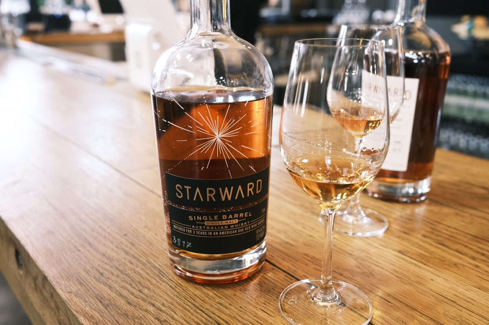

Starward "Single Barrel 3817" 3 years 56% (Barossa barrique)
Australia doesn’t really have a cask picking culture, so this one’s from the US. If the 750ml didn’t give that away… anyway, 225L American oak ex-Barossa red wine barrique.
Colour Amber.
Nose Vanilla! Vanilla crème patisserie. Fruit roll ups and berry jams. Fresh cherries and a bit of desiccated coconut. Malty. Cloves. Oak. With water, cream.
Palate Juicy — apple and blackcurrant. Orange acidity, a bit of the oil from the peel. Quite hot and spicy, oak and oak tannins. Quite tannic actually. Fresh, sweet berries and fruit lollies. A splash of red wine. With water, a little brighter, brown sugar, sort of elegant sweetness.
Finish Caramel and fruit jams. Vanilla. Quite a lot of it, actually. Malty. Long and spicy, quite warming. With water, tannins (underscore that, please).
Comments These red wine casks are insane. Quite impressive that the malt is detectable, although the tannins make it difficult on the palate. 83/100.

Posted by Dominic on 14 Jun 2021